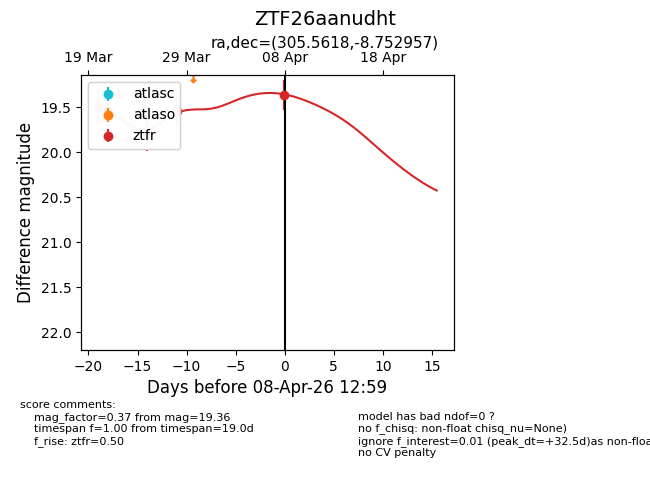
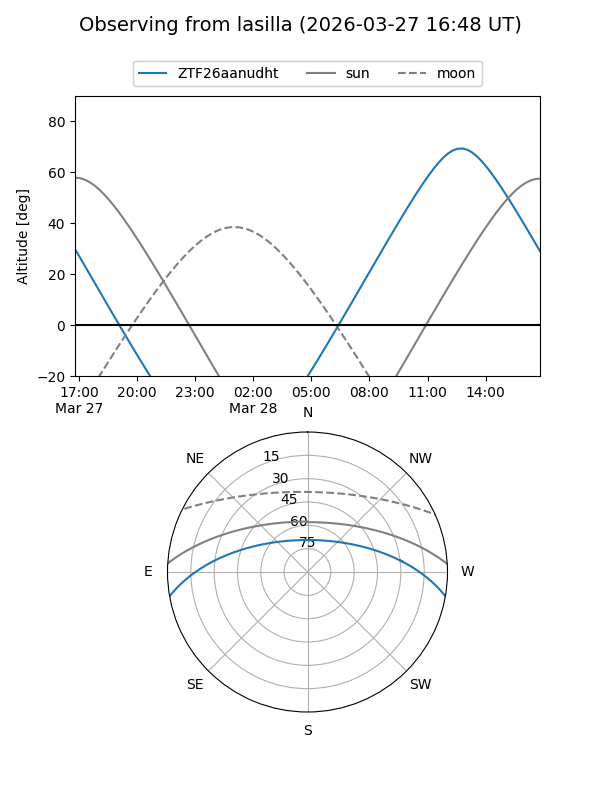
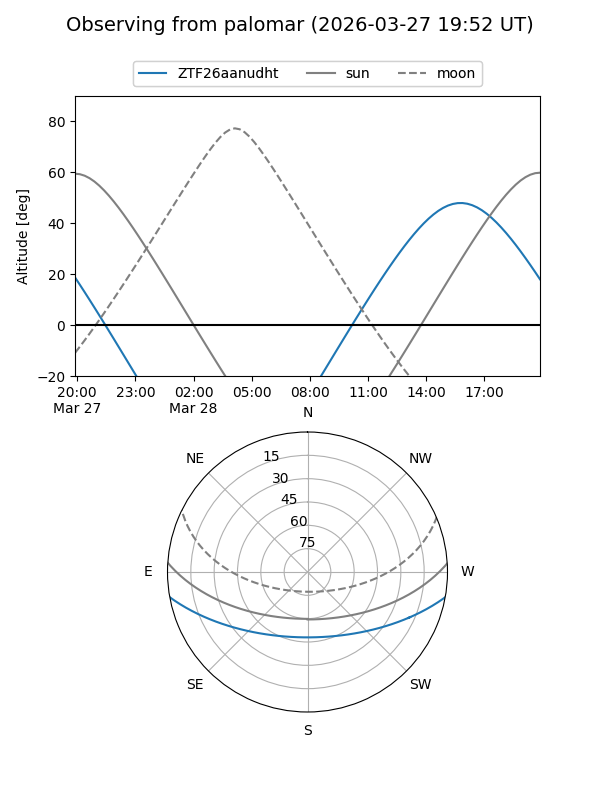
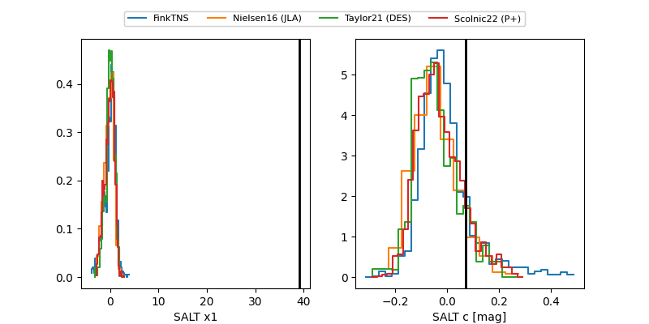

ZTF26aanudht
Target ZTF26aanudht at 2026-04-08 13:04
Aliases and brokers:
FINK: link
Lasair: link
ALeRCE: link
alt names
ZTF26aanudht (ztf,fink_ztf)
Coordinates:
equatorial (ra, dec) = 305.5618,-8.75296
equatorial (HMS+DMS) = 20:22:14.83,-08:45:10.64
galactic (l, b) = (35.3499,-24.13409)
Flags:
Photometry:
last ztfr=19.36
5 ztfr detections
Lightcurve

Visibility


Additional plots
